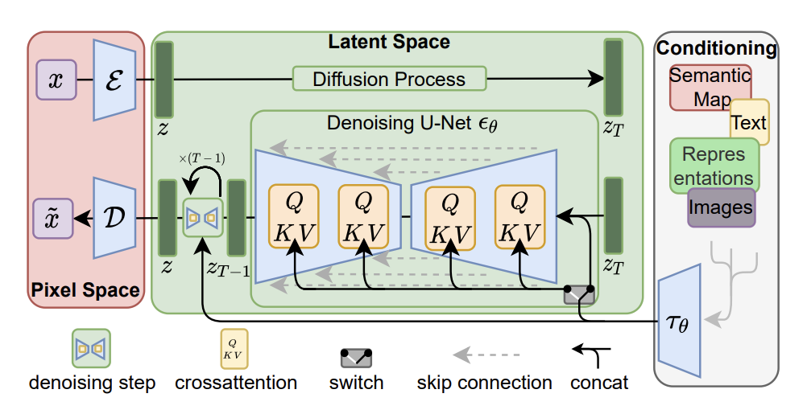
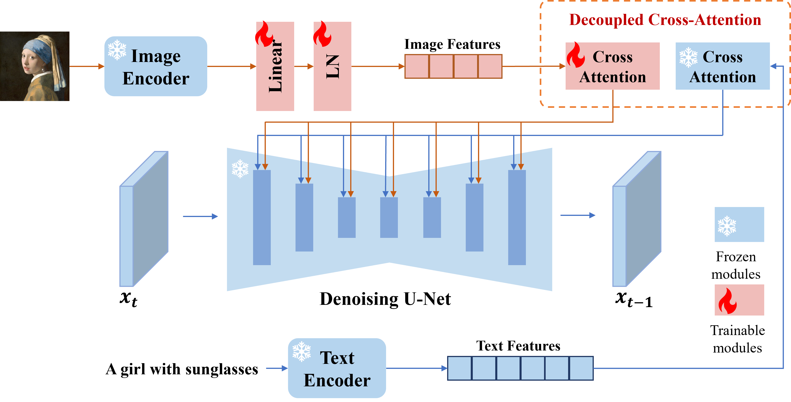

一开始是看的Stable diffusion的,以为是这里开始讲conditioning mechanisms的,后来发现他们idea是从LDM过来的,那么这次就学习一下LDM,这次没来得及看模型,这两天稍微有点忙,看周末会不会有空补一下了.
Latent Diffusion Models
LDM区别于我们之前看的一般diffusion model主要在于两点
之前我们对一般扩散模型是直接喂图片数据. 而LDM对其进行了优化, 它设计了一个encoder和一个decoder, encoder对输入图片进行压缩将其转化到latent space, 然后进行一般diffusion操作之后我们同样会生成一个latent vector, 最后我们对这个生成的latent vector进行decode让其恢复到像素空间即可完成图片生成. 本质高维变低维进行处理. 论文将此方法称为Perceptual Compression.
第二个区别就是条件生成了, 其通过在unet主干网络添加cross-attention来进行针对prompt的图片生成.
Perceptual Image Compression
本质实现一个编码解码器,然后这个编码解码器先去学习将图片映射到latent space,第二部再去训练diffusion model作为内层.
感知压缩本质上是一个tradeoff，之前的很多扩散模型没有使用这个技巧也可以进行，但原有的非感知压缩的扩散模型有一个很大的问题在于，由于在像素空间上训练模型，如果我们希望生成一张分辨率很高的图片，这就意味着我们训练的空间也是一个很高维的空间。引入感知压缩就是说通过VAE这类自编码模型对原图片进行处理，忽略掉图片中的高频信息，只保留重要、基础的一些特征。这种方法带来的的好处就像引文部分说的一样，能够大幅降低训练和采样阶段的计算复杂度，让文图生成等任务能够在消费级GPU上，在10秒级别时间生成图片，大大降低了落地门槛。
采样因子 $ f $
f = H / h, 其中如果f = 1就相当于没有对空间进行压缩, 如果f越大, 就说明压缩程度越高,需要占用的资源更少但同样也更容易失真. 论文对比了f在{1,2,4,8,16,32},发现在4-16效果较好且推荐LDM-4和LDM-8
cross attention
这个就是为什么LDM可以做到text_to_img,针对text而言可以先做一些tokenization和embedding,之后和传入的img_feature一起做cross attention.
而作者则是写到了为了预处理y,他们引入了一种新的domain specific encoder $ $ 从而把任意源y编码到中间态 $ (y) $

然后就是Q为img_feature,KV为text_embedding的attention机制.

implementation(4.13)
首先代码是参考的CompVis的repo,首先简要分析一下各个部分的实现,然后看下这周末有没有可能基于之前的简易diffusion model来实现一个简易的ldm.
既然之前已经分析过了一般diffusion model的工作原理,那么这里就先看看几个新增的部分如何实现, 具体就是encoder,decoder, text_processing, attention mechanism.
Perceptual Image Compression相关
主体在ldm.models.autoencoder.VQModelInterface,其中关键部分为处理encode的decode的部分. 另外中间还有一个VQ过程.
VQ(Vector Quantization)
似乎是一个很早的东西,不过我个人第一次见到,记录一下. 参考文章VQ 说白了就是VQ会将某个区间内的东西用某个值替换,比如0-1全部映射到0,1-2全部映射到1. 不过缺陷就是完全空间划分可能导致不均匀,比如我们需要将0-255映射到4bit,然后所有值都在0-15,那么最后得到的图像就会全部为0. 优化方式为聚类算法,比如KMean,手动选择所有点中的centroids,然后再针对centroids进行映射.
4.16: 有点理解错了. 这里的VQ来自于CompVis的另一篇论文,Taming Transformers for High-Resolution Image Synthesis,本质其实是VQGAN,所以大概的历史发展大概是VQVAE->VQGAN->LDM,其中LDM也可以看作是VQ+DDPM. 这个VQ就是压缩图片到隐藏空间的核心所在, 也是所谓的First stage model.
最本质的VQ其实还是上面划掉的部分,化连续为离散,贴一篇讲解VQVAE
从这篇文章看到VQVAE一开始用VQ解决的问题是 1. PixelCNN这种需要离散数据的模型应该如何进行降维,建模,恢复. 2. 对待离散数据中无梯度部分应该如何处理(Straight-Through Estimator).
而VQGAN, LDM继续延用了VQ这一思想, 这些模型把VQ丢到了第一阶段, 目的是训练一个所谓的autoencoder.
resnet
首先encoder和decoder里面每一个维度变化都是resnet作为基础块来处理的,对于他们写的resnet不需要太过关注内部处理,只用看最后返回是h+x即可. 1
2
3
4
5
6
7
8
9
10
11
12
13
14
15
16
17
18
19
20
21
22# https://github.com/CompVis/latent-diffusion/blob/main/ldm/modules/diffusionmodules/model.py#L121
def forward(self, x, temb):
h = x
h = self.norm1(h)
h = nonlinearity(h)
h = self.conv1(h)
if temb is not None:
h = h + self.temb_proj(nonlinearity(temb))[:,:,None,None]
h = self.norm2(h)
h = nonlinearity(h)
h = self.dropout(h)
h = self.conv2(h)
if self.in_channels != self.out_channels:
if self.use_conv_shortcut:
x = self.conv_shortcut(x)
else:
x = self.nin_shortcut(x)
return x+h
encoder
首先构造函数部分就可以看到一个核为3的卷积层conv_in, 然后依据设置的残差块的个数初始化残差块,然后middle设置俩残差块,中间夹着一个attention块,然后forward的时候就传参即可.
1 | def forward(self, x): |
decoder
大致和encoder相似,不过区别encoder是从高维到低维,这里decoder中的i_level是从reverse里面取,即低维度到高维度 然后除了非线性层的处理,其他都是encoder的逆序处理.
1 | def forward(self, z): |
text processing
这部分主要是ldm.modules.encoders.modules.BERTEmbedder,这里默认使用huggingface的BertTokenizerFast.from_pretrained('bert-base-uncased').
然后TransformWrapper就是NLP的token_emb,position_emb,attention三件套. 1
2
3
4
5
6
7
8
9
10
11
12
13
14
15
16
17
18
19
20
21
22
23
24class BERTEmbedder(AbstractEncoder):
"""Uses the BERT tokenizr model and add some transformer encoder layers"""
def __init__(self, n_embed, n_layer, vocab_size=30522, max_seq_len=77,
device="cuda",use_tokenizer=True, embedding_dropout=0.0):
super().__init__()
self.use_tknz_fn = use_tokenizer
if self.use_tknz_fn:
self.tknz_fn = BERTTokenizer(vq_interface=False, max_length=max_seq_len)
self.device = device
self.transformer = TransformerWrapper(num_tokens=vocab_size, max_seq_len=max_seq_len,
attn_layers=Encoder(dim=n_embed, depth=n_layer),
emb_dropout=embedding_dropout)
def forward(self, text):
if self.use_tknz_fn:
tokens = self.tknz_fn(text)#.to(self.device)
else:
tokens = text
z = self.transformer(tokens, return_embeddings=True)
return z
def encode(self, text):
# output of length 77
return self(text)
attention
不得不说这个代码是真的抽象,这个condition真的传了一万个函数一万个类, 不过本质还是在Unet里面. 1
2
3
4
5
6
7
8
9
10
11
12
13
14
15
16
17
18
19
20
21
22
23
24
25# https://github.com/CompVis/latent-diffusion/blob/main/ldm/modules/attention.py#L152
def forward(self, x, context=None, mask=None):
h = self.heads
q = self.to_q(x)
context = default(context, x)
k = self.to_k(context)
v = self.to_v(context)
q, k, v = map(lambda t: rearrange(t, 'b n (h d) -> (b h) n d', h=h), (q, k, v))
sim = einsum('b i d, b j d -> b i j', q, k) * self.scale
if exists(mask):
mask = rearrange(mask, 'b ... -> b (...)')
max_neg_value = -torch.finfo(sim.dtype).max
mask = repeat(mask, 'b j -> (b h) () j', h=h)
sim.masked_fill_(~mask, max_neg_value)
# attention, what we cannot get enough of
attn = sim.softmax(dim=-1)
out = einsum('b i j, b j d -> b i d', attn, v)
out = rearrange(out, '(b h) n d -> b n (h d)', h=h)
return self.to_out(out)
那其实从结果来看就是x和condition进行cross attention然后输出丢进Unet,然后encode和decode那一套. 从代码执行逻辑来看和之前分析的确实也差不多,今天的分析暂时先到这,下次继续看,然后试试能不能自己来写一个简易LDM.
implementation(4.14-4.15)
看了下dataset和具体实现部分,官方的代码感觉有点难读,然后注意到encoder的部分似乎实现和之前想的有点差异,第一阶段的encoder和decoder其实只是first_stage的其中一部分,最终使用似乎还是ldm.models.autoencoder.VQModelInterface. 然后模型的训练似乎也和之前想的不太一样,看官方的意思似乎是得先训练好autoencoder,之后再直接对autoencoder进行使用:encoder进latent space然后计算,预测之后decode做返回. 不过这里并不太了解encoder训练相关,最近还得多看一下,能找到的资料也非常少,官方的github代码可读性也不是很行.
然后dataset弄的MSCOCO,练手小项目,随缘使用一个600k就行了,不过目前只是大概确认了一下数据,最后大概还需要写个dataset和dataloader之类的载入类.
https://arxiv.org/abs/2012.09841 https://arxiv.org/abs/2112.10752 https://www.spaces.ac.cn/archives/6760#VQ-VAE https://zhuanlan.zhihu.com/p/582693939 https://www.cnblogs.com/zackstang/p/17324257.html#_label5